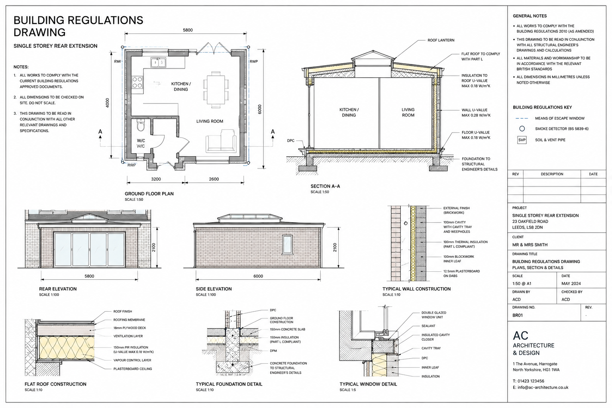

Detailed digital extraction of material quantities, dimensions, and trade components directly from your 2D drawings and 3D architectural models. Delivering transparent measurement sheets that remove guesswork from ordering and tendering.

A Quantity Take-Off (QTO) forms the bedrock of every successful construction project. At Orion Build Cost, we convert complex architectural blueprints, structural calculations, and mechanical layouts into clear, itemised quantity schedules. Whether you are ordering concrete for a ground slab, calculating facing bricks for external cavity walls, or compiling procurement packages for drylining and joinery, our take-offs provide exact net quantities with standard industry wastage allowances.
Trench excavation volumes, topsoil disposal, blinding, strip footings, concrete slab thicknesses, DPM damp proof membranes, and reinforcing mesh allowances.
Facing brickwork counts, inner blockwork m², cavity wall insulation, wall ties, lintels, damp proof courses (DPC), and universal steel beam tonnages.
Cut timber joists, truss allowances, breathable roof underlay, battens, slate/tile coverings, valley gutters, fascia boards, and guttering runs.
Plasterboard area calculations, skim coat plastering, internal door sets, skirtings, architraves, floor tiling, and decorative paint coverage.
Window schedule tabulation, structural opening sizes, bi-fold doors, composite entrance doors, internal fire door ratings, and ironmongery.
Delivered in structured spreadsheets with formula-linked cells, allowing you to insert your own trade unit rates or material supplier prices instantly.
We verify drawing scales, title blocks, and revisions across PDF, DWG, and BIM models to ensure 100% measurement alignment.
Every wall, floor, and roof surface is measured with precise void deductions for windows, structural doors, and chimney breasts.
Quantities are grouped according to UK standard trade conventions (NRM2/SMM7 work sections) with standard material units (m², m³, tonnes, nr).
You receive the completed Excel workbook and markup PDFs highlighting exactly where every quantity was extracted from the drawings.
| Work Element | Measurement Basis | Gross Dimensions | Deductions (Openings) | Net Quantity | Unit |
|---|---|---|---|---|---|
| Foundation Trench Excavation | Width: 0.60m, Depth: 1.05m | 28.5m length | None | 17.96 | m³ |
| C20/25 Ready-Mix Trench Fill | Poured depth: 0.75m | 28.5m length | None | 12.83 | m³ |
| Facing Brickwork Outer Leaf | Perimeter: 28.5m × Height: 3.10m | 88.35 m² | Bi-fold door (5.4m²) + window (1.8m²) | 81.15 | m² |
| Internal Plasterboard & Skim | Ceilings & perimeter interior walls | 210.40 m² | Doorways & rooflight reveals | 194.20 | m² |
| Structural Steel Beams (UB) | 203 × 133 × 30 kg/m | 2 × 4.8m spans | None | 0.29 | tonne |
Upload your architectural drawings to our secure portal for a comprehensive review and transparent quotation.